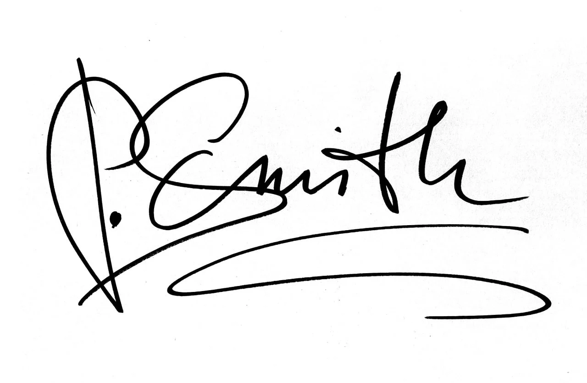

Where Time Tells A Story.
JWICK.LP revives the soul of vintage horology.
Our Origins
Born from a profound admiration for the artistry of eras past, JWICK.LP began as a whisper—a personal odyssey into the heart of vintage timekeeping.
It was a journey fueled by the thrill of discovery, the allure of forgotten Japanese masterpieces, and the intricate dance of gears and springs. This quiet passion soon evolved into a mission: to meticulously resurrect these horological treasures and share their enduring narratives with those who appreciate the extraordinary.
The Artisan's Touch
More than restoration, it's a revival of spirit. Each timepiece is a testament to meticulous care.
Discovery & Curation
We unearth rare gems, seeking watches with inherent character and historical value, primarily from Japan's golden age of horology.
Meticulous Deconstruction
Each watch is carefully disassembled, its soul laid bare, allowing for a thorough inspection of every minute component.
Precision Reconditioning
Movements are serviced, parts restored or authentically replaced, ensuring mechanical integrity and preserving vintage charm.
Final Artistry
Cases are delicately refinished, crystals polished, and the timepiece reassembled to emerge reborn, yet respectfully aged.
The Curator
J. Wick
"Vintage watches are portals to the past, intricate vessels of human ingenuity. My joy lies in stewardship—in breathing new life into these mechanical marvels so their stories can echo into the future. JWICK.LP is more than a business; it's a custodian of legacy, a celebration of enduring craftsmanship."
A Legacy Preserved, A Future Assured
We are dedicated to authenticity, unparalleled craftsmanship, and a transparent journey for every collector. Your JWICK.LP timepiece is an heirloom, a fragment of history to be cherished.
Discover Your Timepiece